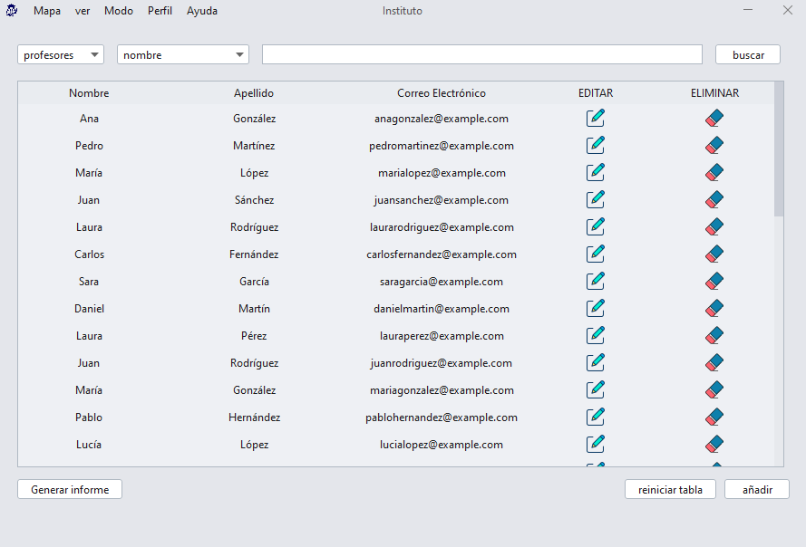
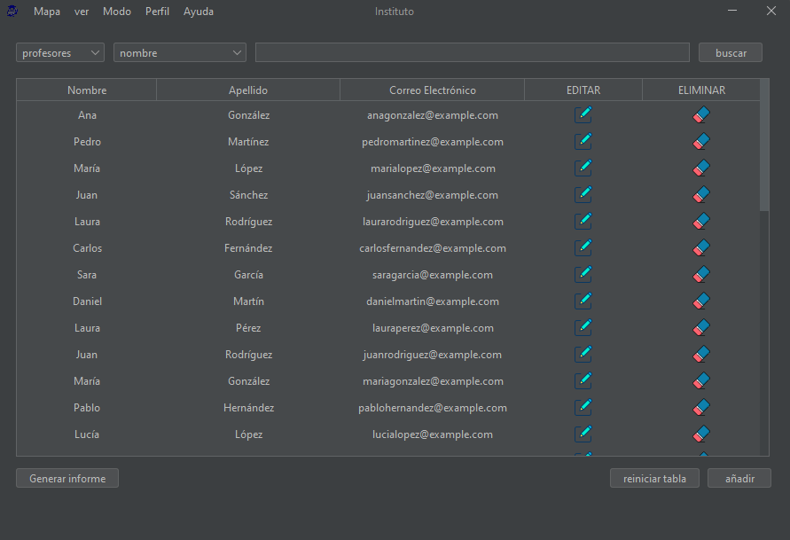
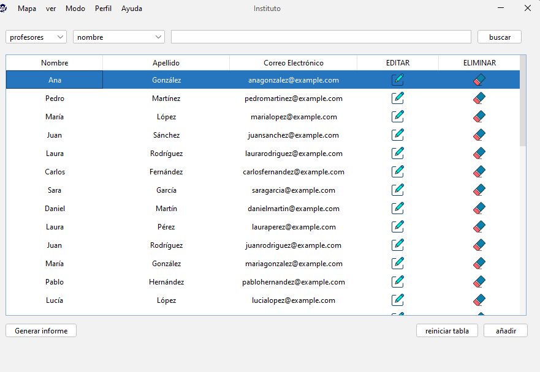

Este modo aplica un esquema de colores con tonos cyan para una experiencia visual vibrante.
Este modo aplica un esquema de colores oscuros, ideal para condiciones de poca luz y para reducir el cansancio visual.
Este modo aplica un esquema de colores claros, ofreciendo una visualización tradicional y luminosa.
